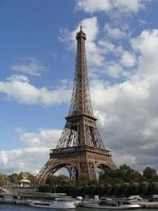
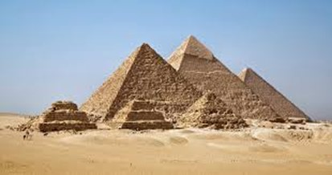
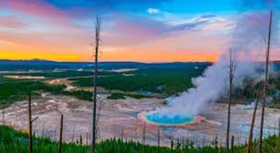

Mis Lugares Turísticos Favoritos
Machu Picchu

Descripción: Antigua ciudad inca del siglo XV, considerada una de las maravillas del mundo. Fue redescubierta en 1911 y es un importante sitio arqueológico de la cultura inca.
Ubicación: Se encuentra en la región de Cusco, Perú, en lo alto de los Andes, a unos 2,430 metros sobre el nivel del mar.
Gran Muralla China

Descripción: Impresionante estructura defensiva construida entre los siglos V a.C. y XVI para proteger a China de invasiones. Tiene más de 21,000 km de longitud.
Ubicación: Se extiende a lo largo del norte de China, desde el desierto de Gobi hasta el mar de Bohai.
Torre Eiffel

Descripción: Icono de París, construida en 1889 para la Exposición Universal. Diseñada por Gustave Eiffel, es uno de los monumentos más visitados del mundo.
Ubicación: Situada en París, Francia, a orillas del río Sena, en el Campo de Marte.
Pirámides de Giza

Descripción: Conjunto de antiguas pirámides egipcias construidas hace más de 4,500 años como tumbas para los faraones. La Gran Pirámide de Keops es la más famosa.
Ubicación: Se encuentran en la meseta de Giza, cerca de El Cairo, Egipto.
Parque Nacional Yellowstone

Descripción: Primer parque nacional del mundo, fundado en 1872. Es famoso por sus géiseres, como el Old Faithful, y su diversa fauna, incluyendo osos y bisontes.
Ubicación: Ubicado en los Estados Unidos, abarca los estados de Wyoming, Montana e Idaho.